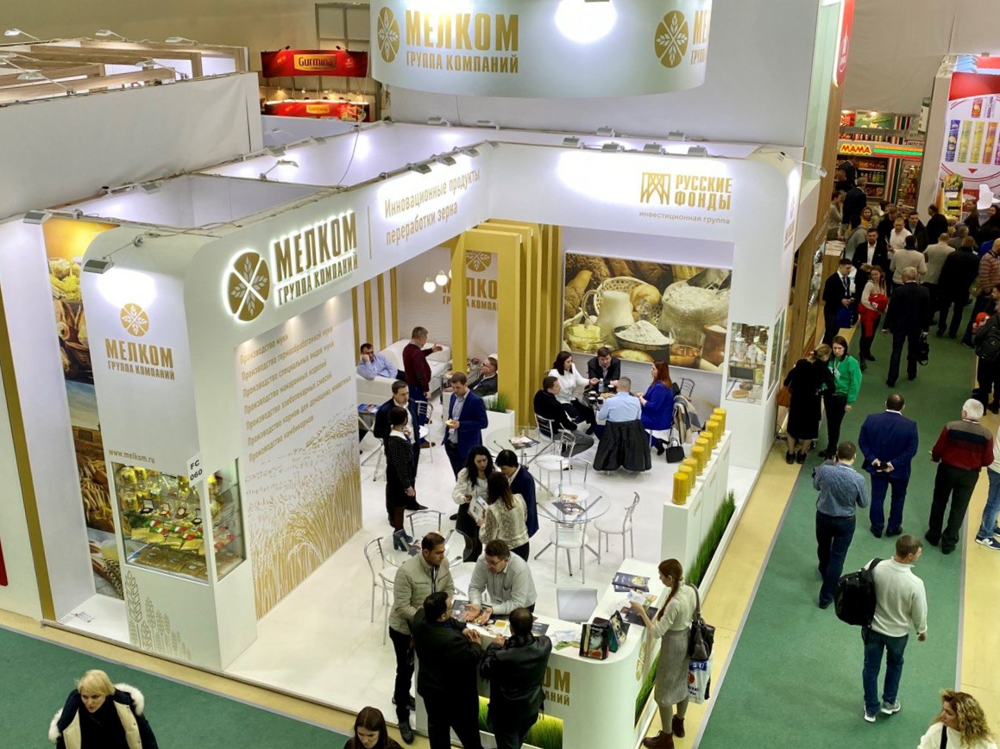
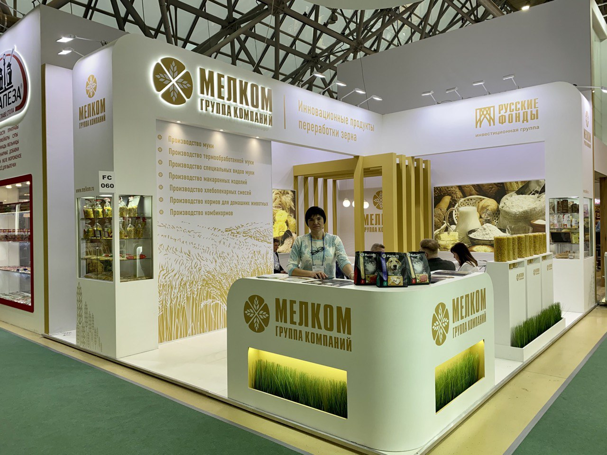
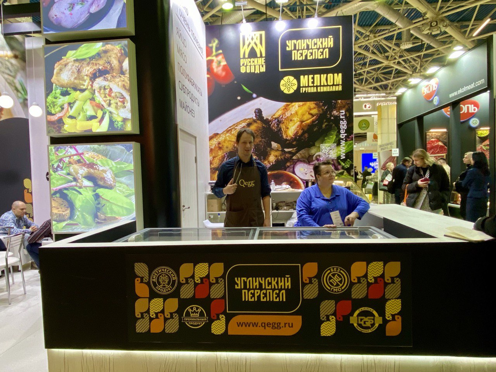
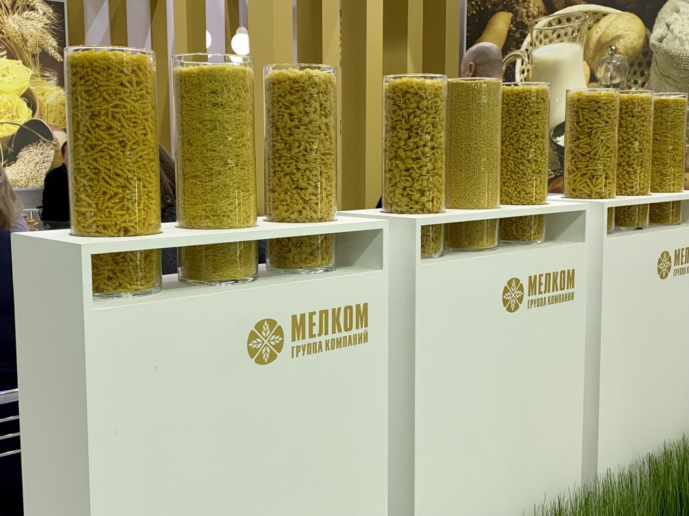

ГК «МЕЛКОМ» представила широкий ассортимент продукции собственных предприятий на «ПРОДЭКСПО-2023» Группа компаний «МЕЛКОМ» (ГК «МЕЛКОМ») в рамках международной выставки «ПРОДЭКСПО-2023» презентовала большой выбор продовольственной продукции на стендах ОАО «Мелькомбинат» и ООО «КЬЮЭГГ». «ПРОДЭКСПО» – крупнейшая международная выставка продуктов питания и напитков в России и Восточной Европе, на которой представлены все отрасли и ключевые игроки продовольственного рынка.
На стенде тверского «Мелькомбината» был представлен широкий перечень бакалейной продукции: высококачественная мука и манная крупа торговых марок «Тверской мелькомбинат» и «Гальяни», мучные смеси ТМ «Mr. Bread», уникальная на Российском рынке термообработанная мука, макаронные изделия брендов «Гальяни», «Pasta Napoletana» и «Мелькомбинат». Также на стенде состоялась презентация нового формата макаронных изделий из твердых сортов пшеницы ТМ «Гальяни» - ПтиТим, который пользовался повышенным интересом среди посетителей и участников выставки.
Особое внимание посетителей выставки привлекли новые премиальные продукты ТМ «Сдобно да Лепко»: это произведенная по ГОСТу продукция из отборного зерна высшей степени очистки, которая обладает высокими хлебопекарными свойствами. Вся мука этой торговой марки, изготовленная из зерна исключительно российского происхождения, всегда только стабильного качества, что позволяет клиентам «Мелькомбината» открывать новые горизонты в сфере хлебопечения, выпуская первоклассную продукцию.
На втором стенде ГК «Мелком» была представлена продуктовая линейка ООО «КЬЮЭГГ», а это перепелиные яйцо, мясо и субпродукты, различные полуфабрикаты из мяса перепела, меланж и майонез. Регулярная модернизация производства и переработки позволяет совершенствовать качество выпускаемого товара и расширять его ассортимент, с вкусовыми параметрами которого посетители выставки смогли ознакомиться во время дегустации.
В рамках выставки представители ГК «МЕЛКОМ» приняли участие в актуальных агропромышленных сессиях, круглых столах и конференциях, а также заключили ряд соглашений с новыми клиентами.
Вернутся на Главную страницу